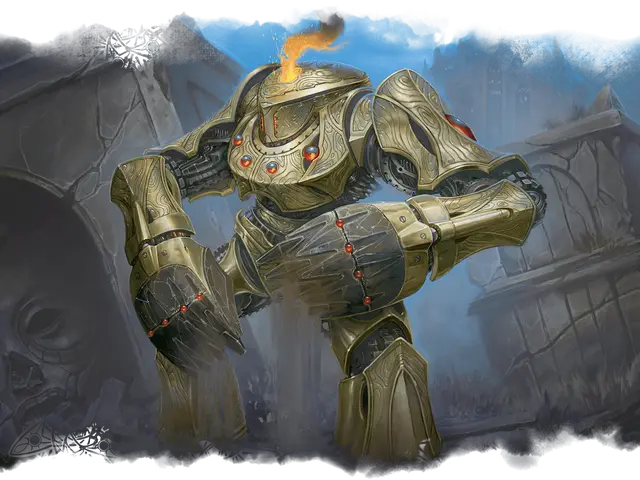

Истиратель руин
Ruin Grinder
Большой Конструкт, без мировоззрения

Класс Доспеха 16 (природный доспех)
Хиты 82 (11к10 + 22)
Скорость 30 футов, копая 30 футов
| мод | спас | ||
|---|---|---|---|
| СИЛ | 22 | +6 | +6 |
| ЛОВ | 13 | +1 | +1 |
| ТЕЛ | 15 | +2 | +2 |
| мод | спас | ||
|---|---|---|---|
| ИНТ | 3 | −4 | −4 |
| МДР | 10 | +0 | +0 |
| ХАР | 1 | −5 | −5 |
Иммунитет к урону огонь, яд
Иммунитет к состояниям испуг, истощение, окаменение, отравление, очарование
Чувства слепое зрение 60 футов (слеп за его пределами), пассивное Восприятие 10
Языки понимает языки своего создателя, но не говорит
Опасность 5 (1800 опыта)
Бонус мастерства +3
Особенности
Поглощение огня. Каждый раз, когда истиратель руин должен получить урон огнём, он не получает урон, и вместо этого восстанавливает количество хитов, равное причиняемому урону огнём.
Осадный монстр. Истиратель руин наносит двойной урон объектам и сооружениям.
Прокладывание туннеля. Истиратель руин может копать сквозь сплошной камень со скоростью копания, уменьшенной вдвое, оставляя за собой туннель диаметром 10 футов.
Действия
Мультиатака. Истиратель руин совершает две атаки Экскаватором.
Экскаватор. . Рукопашная атака оружием: +9 к попаданию, досягаемость 5 футов, одна цель. Попадание: 13 (2к6 + 6) урона силовым полем. Если целью является существо Огромного размера или меньше, оно должно преуспеть в спасброске Силы Сл 17, иначе будет отброшено на расстояние до 10 футов и упадёт ничком.
Описание
Созданные археомантами факультета Лорхолд, истиратели руин — это могучие автоматоны, созданные для раскопок древних руин и артефактов. Массивные зубчатые лопаты, прикрепленные к ручкам истирателя руин, с легкостью разрывают тысячелетнюю породу, заставляя некоторых магов Лорхолда опасаться, что истиратели уничтожают больше истории, чем раскапывают.